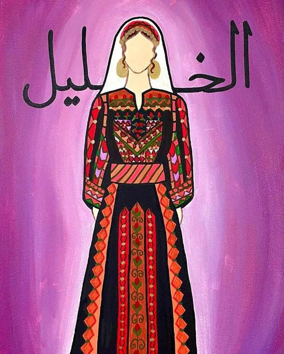
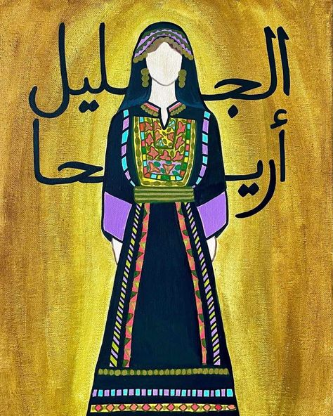
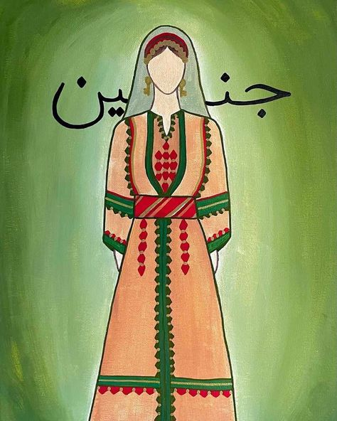
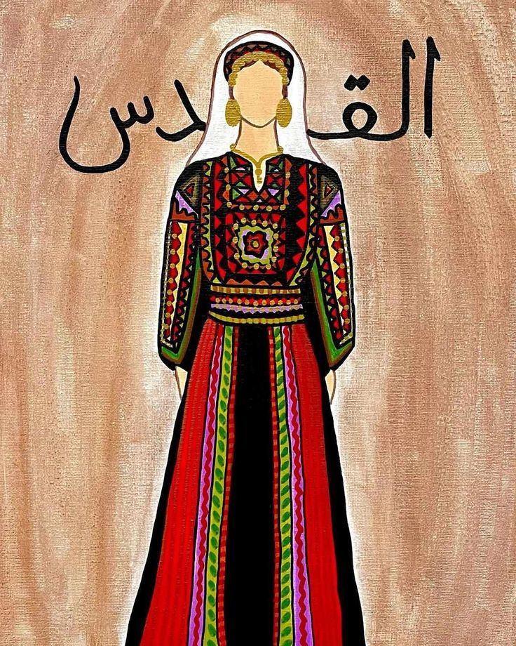
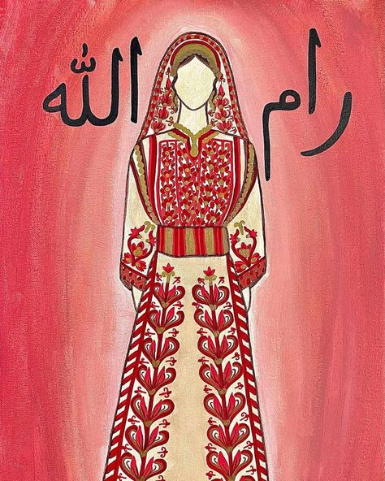
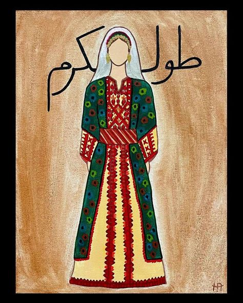
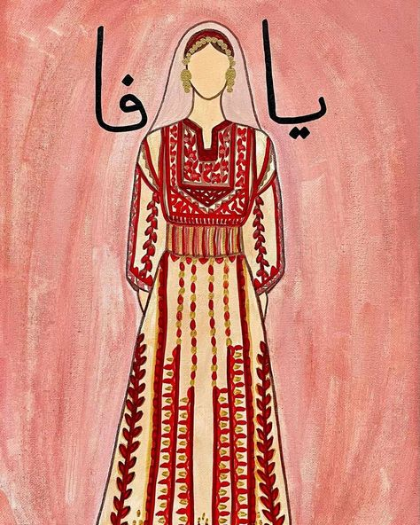

Threads of memory · Palestinian heritage
Tatreez Treasures
Explore the regional artistry of Palestinian embroidery, where every garment carries patterns, craft and stories passed between generations.

Akka
Akka's vibrant embroidery features nature-inspired motifs, reflecting the city's diverse heritage.


Al-Khalil
Hebron's embroidery tells stories of heritage through intricate floral and geometric patterns.

Al-Nasera
Nazareth's embroidery preserves identity with distinct local flora and geometric motifs.


Al-Jalil
Galilee's vibrant embroidery blends cultural influences in a powerful expression of identity.

Bethlehem
Famous for metallic threads, Bethlehem's designs reflect deep spiritual and historical heritage.


Jenin
Jenin's vibrant embroidery embodies the resilience and determination of the Palestinian people.


Al-Kuds
Jerusalem's spiritual embroidery draws inspiration from iconic religious and historical landmarks.


Ramallah
Ramallah's iconic cross-stitch on white linen captures the land's essence with cypress motifs.


Tulkarem
Tulkarem's exquisite embroidery stands as a symbol of creativity and enduring Palestinian tradition.


Yafa
Jaffa's embroidery blends coastal beauty with history, featuring orange blossoms and cypress trees.